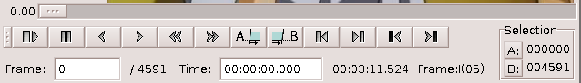
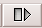
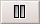
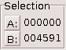
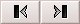
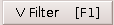
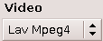
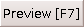
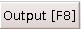

|
Prostøedí programu 1.Spodní nástrojová li¹ta   Pøi prvním stisknutí spustí pøehrávání, druhé stisknutí jej zastaví.  Zastaví pøehrávání. Pøechod na dal¹í snímek. Pøechod na dal¹í I-frame.  Zobrazuje pozici znaèek A (zaèátek) a B (konec). Ulo¾en/zpracován bude pouze výbìr [A,B[.  Pøejde na následující èerný snímek, i kdy¾ èerný snímek je ponìkud subjektivní pojem. :) 2.Levá nástrojová li¹ta  Otevøe dialogové okno video filtrù. Více v kapitole Video. Otevøe dialogové okno audio filtrù. Více v kapitole Audio.  Otevøe dialogové okno pro výbìr a konfiguraci video kodeku. Kdy¾ je toto tlaèítko stisknuté, ulo¾í se zpracovaný obraz (tedy s aplikovanými filtry a kodekem). Pokud není stisknuté, ulo¾í se nezmìnìná kopie zdrojového obrazu. Kdy¾ je toto tlaèítko stisknuté, ulo¾í se zpracovaný zvuk (tedy s aplikovanými filtry a kodekem). Pokud není stisknuté, ulo¾í se nezmìnìná kopie zdrojového zvuku.  Otevøe nové okno s náhledem ukazujícím výstup filtrù. Pøi navigaci v hlavním oknì náhled reflektuje zmìny. Tento re¾im náhledu je hroznì pomalý.  Je-li zapnut, uvidíte v hlavním oknì výstup filtrù pøi pøehrávání. Pouze pøi pøehrávání. Je to rychlá zobrazovací metoda, vìt¹inou zvládne efekty v reálném èase. 3.Horní nástrojová li¹ta Otevøe soubor. |
 Typ souèasného snímku (I/B/P).
Typ souèasného snímku (I/B/P).
 Pøejde na pøedchozí snímek. Mù¾e to trvat nìkolik sekund, kdy¾ se Avidemux musí vrátit k pøedchozímu klíèovému snímku.
Pøejde na pøedchozí snímek. Mù¾e to trvat nìkolik sekund, kdy¾ se Avidemux musí vrátit k pøedchozímu klíèovému snímku.
 Pøechod na pøedchozí I-frame (klíèový snímek).
Pøechod na pøedchozí I-frame (klíèový snímek).
 Stisknutím se nastaví znaèka A (viz
Stisknutím se nastaví znaèka A (viz  Nastaví znaèku B (viz
Nastaví znaèku B (viz  Pøejde na první snímek.
Pøejde na první snímek.
 Pøejde na poslední snímek.
Pøejde na poslední snímek.

 Otevøe dialogové okno pro výbìr a konfiguraci audio kodeku.
Otevøe dialogové okno pro výbìr a konfiguraci audio kodeku.

 Informace o momentálnì naèteném souboru (kodek, délka...).
Informace o momentálnì naèteném souboru (kodek, délka...).
 Ulo¾í video.
Ulo¾í video.
 Rychlý pøístup k 5 poslednì otevøeným souborùm.
Rychlý pøístup k 5 poslednì otevøeným souborùm.